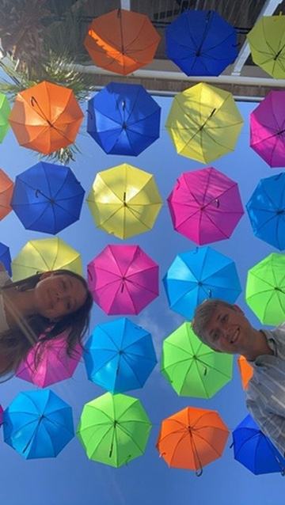
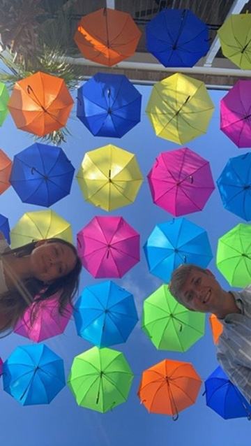

Hello, I'm Ben.
and I'm
an Originalist

About Me
Hi! I'm Ben, and i'm always looking for new ways to learn and grow. I'm a software developer with a passion for learning new technologies and creating new things. If you don't see me working on something i'm enjoy life with my family and friends.
If you want to know more about me or my work, feel free to look around this site. Enjoy!
 

Projects
Throughout my days I'm always finding new projects to work on whether that be something small like a arduino automatic motion camera or an entire app to help solve some problems I wish there were easy solutions for.
So why not make these myself and grow my skills in the process? I'm always looking for new projects to work on and new technologies to learn.

Hobbies
In my free time, I enjoy a variety of hobbies such as hiking, reading, crocheting, photography, games, carving, and many many more.
Why do I enjoy learning so many hobbies? Why wouldn't I? It's always enjoy able to learn something new and to be able to create something original with my own hands.


Contact
If you want to get in touch with me, feel free to contact through my email or DM me through one of my social media accounts.
Click here to find my contact information.